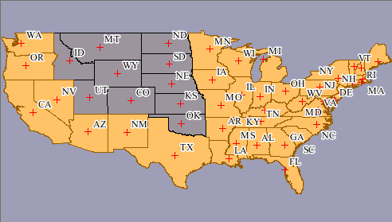

Select the features you want to exclude by dragging the
mouse pointer around them.
Right-click and choose Hide Selection from the menu.
You can modify the excluded features by changing your
selection, right-clicking and choosing Show Selection or Hide Selection as many
times as you like.
Hidden features are shown in grey in the Custom Map Converter.

Features that are hidden when you generate a map will
be excluded from the generated map.